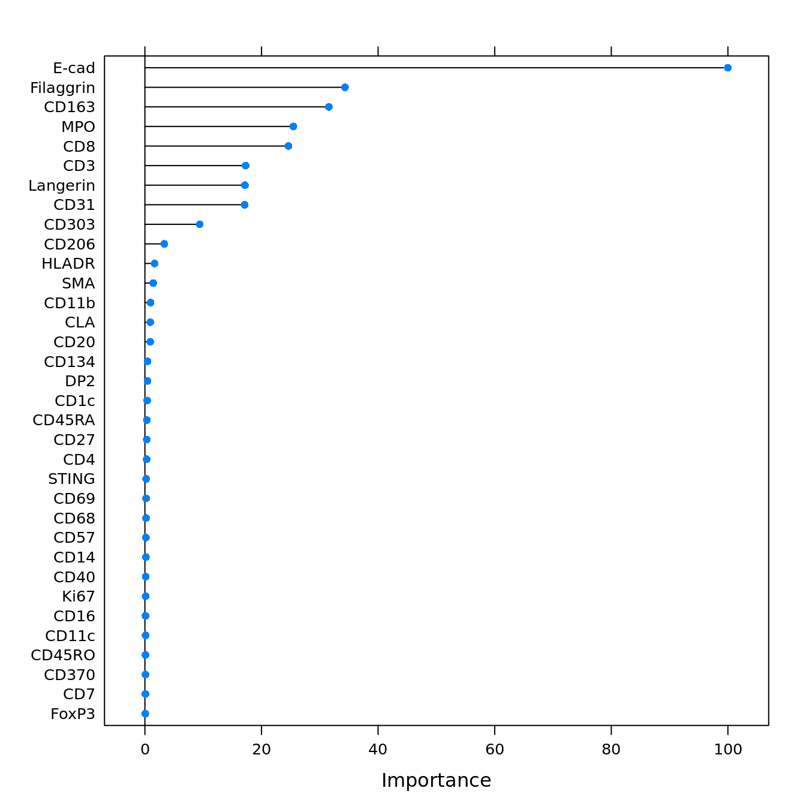

random_forest_celltype_classification
DanielS
2020-09-02
Last updated: 2021-03-23
Checks: 7 0
Knit directory: Mitamura_Schulz/
This reproducible R Markdown analysis was created with workflowr (version 1.6.2). The Checks tab describes the reproducibility checks that were applied when the results were created. The Past versions tab lists the development history.
Great! Since the R Markdown file has been committed to the Git repository, you know the exact version of the code that produced these results.
Great job! The global environment was empty. Objects defined in the global environment can affect the analysis in your R Markdown file in unknown ways. For reproduciblity it’s best to always run the code in an empty environment.
The command set.seed(20210322) was run prior to running the code in the R Markdown file. Setting a seed ensures that any results that rely on randomness, e.g. subsampling or permutations, are reproducible.
Great job! Recording the operating system, R version, and package versions is critical for reproducibility.
Nice! There were no cached chunks for this analysis, so you can be confident that you successfully produced the results during this run.
Great job! Using relative paths to the files within your workflowr project makes it easier to run your code on other machines.
Great! You are using Git for version control. Tracking code development and connecting the code version to the results is critical for reproducibility.
The results in this page were generated with repository version 1f66de5. See the Past versions tab to see a history of the changes made to the R Markdown and HTML files.
Note that you need to be careful to ensure that all relevant files for the analysis have been committed to Git prior to generating the results (you can use wflow_publish or wflow_git_commit). workflowr only checks the R Markdown file, but you know if there are other scripts or data files that it depends on. Below is the status of the Git repository when the results were generated:
Ignored files:
Ignored: .Rhistory
Ignored: .Rproj.user/
Ignored: analysis/.Rhistory
Ignored: pre_processing/
Unstaged changes:
Modified: analysis/_site.yml
Note that any generated files, e.g. HTML, png, CSS, etc., are not included in this status report because it is ok for generated content to have uncommitted changes.
These are the previous versions of the repository in which changes were made to the R Markdown (analysis/04_celltype_classification.rmd) and HTML (docs/04_celltype_classification.html) files. If you’ve configured a remote Git repository (see ?wflow_git_remote), click on the hyperlinks in the table below to view the files as they were in that past version.
| File | Version | Author | Date | Message |
|---|---|---|---|---|
| Rmd | 1f66de5 | SchulzDan | 2021-03-22 | analysis scripts functional. first version html |
| html | 1f66de5 | SchulzDan | 2021-03-22 | analysis scripts functional. first version html |
Introduction
Manually labelled cells (cytomapper shiny) will be loaded and used to train a random forest classifier. The classifier will then be used to classify all cells into groups of celltypes
Preparations
Read in data
First, we will read in the SingleCellExperiment object and load all libraries.
library(caret)
library(scater)
library(tidyverse)
library(dittoSeq)
library(viridis)
library(doParallel)
library(SingleCellExperiment)
library(dittoSeq)Load data
sce <- readRDS("~/bbvolume/Data/Dermatology/covid_skin_rash/Rout/data/sce_protein.rds")
# load all subsetted sce object from hierarchichal gating and combine them
path = "~/bbvolume/Data/Dermatology/covid_skin_rash/Rout/celltype_annotation/"
file.names <- dir(path, pattern =".rds")
# loop through all files of the first labelling session and combine sce objects
for(i in 1:length(file.names)){
file <- readRDS(paste0(path,file.names[i]))
reducedDim(file,"UMAP") <- NULL
assay(file,"exprs") <- NULL
colData(file) <- colData(file)[,c("ImageNumber","cellID","cytomapper_CellLabel")]
if (i == 1){
labelled_sce <- file
}
else {
labelled_sce <- cbind(labelled_sce, file)
}
}
# a second round of celltype labelling was performed after the first classification round because we noticed that one positive control had higher background for CD8 in the basal epithelial layer and too many CD8 T cells had been assigned.Duplicates
# how many duplicates do we have?
ncol(labelled_sce[,duplicated(labelled_sce$cellID) == T]) / ncol(labelled_sce[,duplicated(labelled_sce$cellID) == F]) * 100[1] 10.3833# remove duplicates (more than 1 label per cellID)
unique_labels <- labelled_sce[,duplicated(labelled_sce$cellID) == F]Add labels to SCE object
label_vector <- rep("unlabelled", ncol(sce))
names(label_vector) <- colnames(sce)
# here we add the annotation labels to the cell IDs
label_vector[colnames(unique_labels)] <- unique_labels$cytomapper_CellLabel
label_vector <- gsub(label_vector,pattern = "_\\d*",replacement = "")
# unique cell labels.
unique(label_vector) [1] "unlabelled" "Other" "Keratinocytes"
[4] "Macrophages" "Vasculature" "KeratinocytesFilaggrin"
[7] "Thelper" "Langerhans" "pDC"
[10] "Neutrophil" "Bcell" "Tcytotoxic"
[13] "Filaggrin" "Epithelial" # add to sce
colData(sce)$layer_1_gated <- label_vector
# now we rename some of the celltypes since we have not consistently labelled the cells
sce[,sce$layer_1_gated == "Epithelial"]$layer_1_gated <- "Keratinocyte1"
sce[,sce$layer_1_gated == "Keratinocytes"]$layer_1_gated <- "Keratinocyte1"
sce[,sce$layer_1_gated == "KeratinocytesFilaggrin"]$layer_1_gated <- "Keratinocyte2"
sce[,sce$layer_1_gated == "Filaggrin"]$layer_1_gated <- "Keratinocyte2"Create colour vector
Here, we will define a colour vector for the cell-types contained in layer 1.
layer1_colours <- vector(length = length(unique(sce$layer_1_gated)))
names(layer1_colours) <- unique(sce$layer_1_gated)
layer1_colours["pDC"] <- "goldenrod2"
layer1_colours["Macrophages"] <- "green1"
layer1_colours["Neutrophil"] <- "blue1"
layer1_colours["Bcell"] <- "yellow"
layer1_colours["Thelper"] <- "lightpink1"
layer1_colours["Vasculature"] <- "red2"
layer1_colours["Keratinocyte1"] <- "cyan"
layer1_colours["Langerhans"] <- "deepskyblue"
layer1_colours["Tcytotoxic"] <- "deeppink1"
layer1_colours["Other"] <- "sienna4"
layer1_colours["unlabelled"] <- "gray"
layer1_colours["Keratinocyte2"] <- "aquamarine3"
# Save in SCE object
metadata(sce)$colour_vectors$layer_1 <- layer1_coloursQuality control
In the next step, we will check the quality of the labels by:
- checking how many cells contain multiple labels (see chunk 2)
- how many cells of how many images are labeled
- how balanced the classes are
- if the selected cells actually express the markers that they are supposed to express
Next, we will check how many cells and how many images are labelled.
# 2. How many cells of how many images are labelled
# Percent cells labelled
as_tibble(colData(sce)) %>%
summarise(labelled_cells = sum(layer_1_gated != "unlabelled")/n()) * 100 labelled_cells
1 70.94871# Percent images labelled
as_tibble(colData(sce)) %>%
group_by(ImageNumber) %>%
summarise(labelled_cells = sum(layer_1_gated != "unlabelled")) %>%
ungroup() %>%
summarise(labelled_images = sum(labelled_cells != 0)/n()) * 100 labelled_images
1 100# Percent of cells labelled per image
as_tibble(colData(sce)) %>%
group_by(ImageNumber) %>%
summarise(labelled_cells = sum(layer_1_gated != "unlabelled")/n(),
number_cells = n()) %>%
as.data.frame() ImageNumber labelled_cells number_cells
1 2 0.6879371 1144
2 3 0.8430805 3454
3 4 0.6109272 1208
4 5 0.7053861 1541
5 6 0.4902216 767
6 7 0.7130802 1659
7 8 0.4644745 1703
8 9 0.9220485 4413
9 11 0.7239336 1688
10 12 0.5519453 4678
11 13 0.6964006 1278
12 14 0.7316496 2534
13 15 0.7760067 1192
14 16 0.6309840 1504
15 17 0.6066667 1500
16 18 0.8101591 1949We will check how balanced the classes are across the images.
# Total cells per class
as_tibble(colData(sce)) %>%
group_by(layer_1_gated) %>%
summarise(number_cells = n())# A tibble: 12 x 2
layer_1_gated number_cells
<chr> <int>
1 Bcell 40
2 Keratinocyte1 12188
3 Keratinocyte2 1180
4 Langerhans 489
5 Macrophages 2978
6 Neutrophil 1394
7 Other 2175
8 pDC 116
9 Tcytotoxic 1114
10 Thelper 355
11 unlabelled 9358
12 Vasculature 825Now, we will check the expression of selected markers across the classes and visualize cell labels on UMAP.
lab_sce <- sce[,sce$layer_1_gated != "unlabelled"]
agr_sce <- aggregateAcrossCells(lab_sce, ids = colData(lab_sce)[,c("ImageNumber", "layer_1_gated")],
statistics = "mean")
assay(agr_sce, "asinh") <- asinh(counts(agr_sce))
assay(agr_sce, "scaled_asinh") <- t(scale(t(asinh(counts(agr_sce)))))
colnames(agr_sce) <- paste0(agr_sce$ImageNumber, "_", agr_sce$layer_1_gated)
# Non-scaled
dittoHeatmap(agr_sce, assay = "asinh",
cells.use = colnames(agr_sce),
annot.by = c("ImageNumber", "layer_1_gated"),
order.by = "layer_1_gated", cluster_rows = FALSE,
scale = "none", heatmap.colors = viridis(100),
annotation_colors = list(layer_1_gated = metadata(sce)$colour_vectors$layer_1))
| Version | Author | Date |
|---|---|---|
| 1f66de5 | SchulzDan | 2021-03-22 |
# Centered and scaled
dittoHeatmap(agr_sce, assay = "scaled_asinh",
annot.by = c("ImageNumber", "layer_1_gated"),
order.by = "layer_1_gated", cluster_rows = FALSE,
annotation_colors = list(layer_1_gated = metadata(sce)$colour_vectors$layer_1),
heatmap.colors = colorRampPalette(c("dark blue", "white", "dark red"))(100),
breaks = seq(-3, 3, length.out = 101))
| Version | Author | Date |
|---|---|---|
| 1f66de5 | SchulzDan | 2021-03-22 |
agr_sce <- aggregateAcrossCells(lab_sce, ids = colData(lab_sce)[,c("layer_1_gated")],
statistics = "mean")
assay(agr_sce, "asinh") <- asinh(counts(agr_sce))
assay(agr_sce, "scaled_asinh") <- t(scale(t(asinh(counts(agr_sce)))))
colnames(agr_sce) <- paste0(agr_sce$ImageNumber, "_", agr_sce$layer_1_gated)
dittoHeatmap(agr_sce, assay = "scaled_asinh",
annot.by = c( "layer_1_gated"),
order.by = "layer_1_gated", cluster_rows = TRUE,
annotation_colors = list(layer_1_gated = metadata(sce)$colour_vectors$layer_1),
heatmap.colors = colorRampPalette(c("dark blue", "white", "dark red"))(100),
breaks = seq(-3, 3, length.out = 101))
| Version | Author | Date |
|---|---|---|
| 1f66de5 | SchulzDan | 2021-03-22 |
Random Forrest Training
After quality control, we will now use a random forest classifier to classify the remaining cells in the dataset.
Splitting by cell-types
In the first instance, we will split the labelled data based on their cell-types and ignore from which images the calls come. In the current setting most images have been labelled but in the future we want to have a closer look at how well cells of non-labelled images are classified.
Train and validate the classifier
We will first split the labelled data into training and test (validation) data at a ratio of 70/30 train/test.
set.seed(1234)
trainIndex <- createDataPartition(factor(lab_sce$layer_1_gated), p = 0.70)
train_sce <- lab_sce[,trainIndex$Resample1]
test_sce <- lab_sce[,-trainIndex$Resample1]good_markers <- rownames(sce)
good_markers <- good_markers[c(2:17,19:29,31,32,34,35,36,39)]Here, we will first use a 10-fold crossvalidation by partitioning the data randomly across the full dataset. This process is repeated 5 times. We will also use parallel processing for time reasons. For the randomForrest classifier, we need to tune the mtry parameter - the number of variables sampled for each split.
# Define seeds for parallel processing
# Per iteration, we evaluate 10 models while tuning mtry
set.seed(222)
seeds <- vector(mode = "list", length = 11)
for (i in 1:10) {
seeds[[i]] <- sample.int(5000, 10)
}
seeds[[11]] <- sample.int(5000, 1)
fitControl <- trainControl(method = "repeatedcv",
repeats = 1,
number = 10,
seeds = seeds)
cl <- makePSOCKcluster(7, setup_strategy = "sequential")
registerDoParallel(cl)
set.seed(1234)
start = Sys.time()
rffit <- train(x = t(assay(train_sce, "asinh")[rowData(sce)$good_marker,]),
y = factor(train_sce$layer_1_gated),
method = "rf", ntree = 1000,
tuneLength = 10,
trControl = fitControl)
stopCluster(cl)
end = Sys.time()
print(end-start)Time difference of 16.89166 minsrffitRandom Forest
16002 samples
36 predictor
11 classes: 'Bcell', 'Keratinocyte1', 'Keratinocyte2', 'Langerhans', 'Macrophages', 'Neutrophil', 'Other', 'pDC', 'Tcytotoxic', 'Thelper', 'Vasculature'
No pre-processing
Resampling: Cross-Validated (10 fold, repeated 1 times)
Summary of sample sizes: 14403, 14403, 14402, 14400, 14400, 14404, ...
Resampling results across tuning parameters:
mtry Accuracy Kappa
2 0.9707538 0.9567442
5 0.9813140 0.9724187
9 0.9840634 0.9764882
13 0.9846880 0.9774127
17 0.9851878 0.9781561
20 0.9850001 0.9778807
24 0.9851875 0.9781622
28 0.9853746 0.9784386
32 0.9855001 0.9786263
36 0.9852503 0.9782610
Accuracy was used to select the optimal model using the largest value.
The final value used for the model was mtry = 32.We will now have a look at the accuracy measures over iterations. The only parameter that has been tuned is mtry.
ggplot(rffit) +
geom_errorbar(data = rffit$results,
aes(ymin = Accuracy - AccuracySD,
ymax = Accuracy + AccuracySD),
width = 0.4)
| Version | Author | Date |
|---|---|---|
| 1f66de5 | SchulzDan | 2021-03-22 |
We can also compute the confusion matrix:
confusionMatrix(rffit)Cross-Validated (10 fold, repeated 1 times) Confusion Matrix
(entries are percentual average cell counts across resamples)
Reference
Prediction Bcell Keratinocyte1 Keratinocyte2 Langerhans Macrophages
Bcell 0.1 0.0 0.0 0.0 0.0
Keratinocyte1 0.0 53.2 0.1 0.0 0.0
Keratinocyte2 0.0 0.0 5.0 0.0 0.0
Langerhans 0.0 0.0 0.0 2.1 0.0
Macrophages 0.0 0.0 0.0 0.0 12.7
Neutrophil 0.0 0.0 0.0 0.0 0.0
Other 0.0 0.0 0.0 0.0 0.0
pDC 0.0 0.0 0.0 0.0 0.0
Tcytotoxic 0.0 0.0 0.0 0.0 0.1
Thelper 0.0 0.0 0.0 0.0 0.1
Vasculature 0.0 0.0 0.0 0.0 0.0
Reference
Prediction Neutrophil Other pDC Tcytotoxic Thelper Vasculature
Bcell 0.0 0.0 0.0 0.0 0.0 0.0
Keratinocyte1 0.0 0.0 0.0 0.0 0.0 0.0
Keratinocyte2 0.0 0.0 0.0 0.0 0.0 0.0
Langerhans 0.0 0.0 0.0 0.0 0.0 0.0
Macrophages 0.1 0.0 0.1 0.0 0.0 0.1
Neutrophil 6.0 0.0 0.0 0.0 0.0 0.0
Other 0.0 9.4 0.0 0.0 0.0 0.0
pDC 0.0 0.0 0.4 0.0 0.0 0.0
Tcytotoxic 0.0 0.0 0.0 4.7 0.0 0.0
Thelper 0.0 0.0 0.0 0.0 1.5 0.0
Vasculature 0.0 0.0 0.0 0.0 0.0 3.4
Accuracy (average) : 0.9855We will also look at the variable importance.
cur_varImp <- varImp(rffit)
plot(cur_varImp, top = 34)
| Version | Author | Date |
|---|---|---|
| 1f66de5 | SchulzDan | 2021-03-22 |
Finally, we will validate the model using the test data.
cur_pred <- predict(rffit, newdata = t(assay(test_sce, "asinh")[rowData(sce)$good_marker,]))
cm <- confusionMatrix(data = cur_pred, reference = factor(test_sce$layer_1_gated))
cmConfusion Matrix and Statistics
Reference
Prediction Bcell Keratinocyte1 Keratinocyte2 Langerhans Macrophages
Bcell 5 0 0 0 0
Keratinocyte1 0 3647 9 0 5
Keratinocyte2 0 1 340 0 0
Langerhans 0 4 0 146 0
Macrophages 2 2 0 0 871
Neutrophil 1 0 0 0 0
Other 0 0 5 0 1
pDC 2 0 0 0 0
Tcytotoxic 0 0 0 0 7
Thelper 1 1 0 0 7
Vasculature 1 1 0 0 2
Reference
Prediction Neutrophil Other pDC Tcytotoxic Thelper Vasculature
Bcell 0 0 0 0 0 0
Keratinocyte1 0 0 0 1 0 0
Keratinocyte2 0 2 0 0 0 0
Langerhans 0 0 0 1 0 0
Macrophages 7 5 4 3 3 10
Neutrophil 411 0 1 1 0 1
Other 0 645 0 0 0 0
pDC 0 0 27 1 0 0
Tcytotoxic 0 0 1 324 2 1
Thelper 0 0 1 3 101 3
Vasculature 0 0 0 0 0 232
Overall Statistics
Accuracy : 0.985
95% CI : (0.9818, 0.9877)
No Information Rate : 0.5336
P-Value [Acc > NIR] : < 2.2e-16
Kappa : 0.9778
Mcnemar's Test P-Value : NA
Statistics by Class:
Class: Bcell Class: Keratinocyte1 Class: Keratinocyte2
Sensitivity 0.4166667 0.9975 0.96045
Specificity 1.0000000 0.9953 0.99954
Pos Pred Value 1.0000000 0.9959 0.99125
Neg Pred Value 0.9989777 0.9972 0.99785
Prevalence 0.0017513 0.5336 0.05166
Detection Rate 0.0007297 0.5323 0.04962
Detection Prevalence 0.0007297 0.5344 0.05006
Balanced Accuracy 0.7083333 0.9964 0.98000
Class: Langerhans Class: Macrophages Class: Neutrophil
Sensitivity 1.00000 0.9754 0.98325
Specificity 0.99925 0.9940 0.99938
Pos Pred Value 0.96689 0.9603 0.99036
Neg Pred Value 1.00000 0.9963 0.99891
Prevalence 0.02131 0.1303 0.06100
Detection Rate 0.02131 0.1271 0.05998
Detection Prevalence 0.02204 0.1324 0.06057
Balanced Accuracy 0.99963 0.9847 0.99132
Class: Other Class: pDC Class: Tcytotoxic Class: Thelper
Sensitivity 0.98926 0.794118 0.97006 0.95283
Specificity 0.99903 0.999560 0.99831 0.99763
Pos Pred Value 0.99078 0.900000 0.96716 0.86325
Neg Pred Value 0.99887 0.998974 0.99847 0.99926
Prevalence 0.09515 0.004962 0.04874 0.01547
Detection Rate 0.09413 0.003940 0.04729 0.01474
Detection Prevalence 0.09501 0.004378 0.04889 0.01708
Balanced Accuracy 0.99415 0.896839 0.98419 0.97523
Class: Vasculature
Sensitivity 0.93927
Specificity 0.99939
Pos Pred Value 0.98305
Neg Pred Value 0.99773
Prevalence 0.03605
Detection Rate 0.03386
Detection Prevalence 0.03444
Balanced Accuracy 0.96933data.frame(cm$byClass) %>%
mutate(class = sub("Class: ", "", rownames(cm$byClass))) %>%
ggplot() +
geom_point(aes(1 - Specificity, Sensitivity,
size = Detection.Rate,
fill = class),
shape = 21) +
scale_fill_manual(values = metadata(sce)$colour_vectors$layer_1) +
theme_bw() +
ylab("Sensitivity (TPR)") +
xlab("1 - Specificity (FPR)")
| Version | Author | Date |
|---|---|---|
| 1f66de5 | SchulzDan | 2021-03-22 |
We will also observe the distribution of classification probabilities per image and class:
cur_pred <- predict(rffit, newdata = t(assay(test_sce, "asinh")[rowData(sce)$good_marker,]),
type = "prob")
cur_pred %>%
mutate(class = test_sce$layer_1_gated,
image = test_sce$ImageNumber) %>%
reshape2::melt(id.vars = c("class", "image"), variable.name = "celltype", value.name = "probability") %>%
filter(class == celltype) %>%
ggplot() +
geom_boxplot(aes(interaction(image), probability), outlier.size = 0.5) +
facet_wrap(. ~ class) +
theme(axis.text.x = element_text(angle = 90, hjust = 1))
| Version | Author | Date |
|---|---|---|
| 1f66de5 | SchulzDan | 2021-03-22 |
This plot shows the median probability for each image and class.
Predicting new data
Finally, we will predict the labels of all other cells. For cell-type classification, we will use the method that was trained across all images.
unlab_sce <- sce[,sce$layer_1_gated == "unlabelled"]
start = Sys.time()
cell_labels.class <- as.character(predict.train(rffit,
newdata = t(assay(unlab_sce[rowData(sce)$good_marker,], "asinh")),
type = "raw"))
cell_labels.prob <- predict.train(rffit,
newdata = t(assay(unlab_sce[rowData(sce)$good_marker,], "asinh")),
type = "prob")
end = Sys.time()
print(end-start)Time difference of 2.048036 secsStore predictions in SCE object. We will not overwrite the labels of the already labelled cells.
cell_labels <- sce$layer_1_gated
cell_labels[colnames(unlab_sce)] <- cell_labels.class
sce$celltype_classified <- cell_labelsVisualization
Here, we will visualize the predicted cell-types and their associated classification probabilities.
Using reduced dimensions
dittoDimPlot(sce, var = "layer_1_gated", reduction.use = "UMAP", size = 0.75,
color.panel = metadata(sce)$colour_vectors$layer_1, main = "Cell types gated")
| Version | Author | Date |
|---|---|---|
| 1f66de5 | SchulzDan | 2021-03-22 |
dittoDimPlot(sce, var= "celltype_classified", reduction.use = "UMAP", size = 0.75,
color.panel = metadata(sce)$colour_vectors$layer_1, main = "Cell types classified")
| Version | Author | Date |
|---|---|---|
| 1f66de5 | SchulzDan | 2021-03-22 |
Probabilities for all celltypes
for (i in unique(cell_labels.class)) {
cur_df <- data.frame(UMAP1 = reducedDim(unlab_sce, "UMAP")[,1],
UMAP2 = reducedDim(unlab_sce, "UMAP")[,2],
prob = cell_labels.prob[,i],
class = cell_labels.class == i)
p <- ggplot() + geom_point(aes(UMAP1, UMAP2), data = cur_df[!cur_df$class,],
color = "gray") +
geom_point(aes(UMAP1, UMAP2, color = prob), data = cur_df[cur_df$class,],
size = 0.5)+
scale_colour_viridis(name = paste0(i, " probability"))
plot(p)
}
| Version | Author | Date |
|---|---|---|
| 1f66de5 | SchulzDan | 2021-03-22 |
| Version | Author | Date |
|---|---|---|
| 1f66de5 | SchulzDan | 2021-03-22 |

| Version | Author | Date |
|---|---|---|
| 1f66de5 | SchulzDan | 2021-03-22 |
| Version | Author | Date |
|---|---|---|
| 1f66de5 | SchulzDan | 2021-03-22 |
| Version | Author | Date |
|---|---|---|
| 1f66de5 | SchulzDan | 2021-03-22 |
| Version | Author | Date |
|---|---|---|
| 1f66de5 | SchulzDan | 2021-03-22 |
| Version | Author | Date |
|---|---|---|
| 1f66de5 | SchulzDan | 2021-03-22 |
| Version | Author | Date |
|---|---|---|
| 1f66de5 | SchulzDan | 2021-03-22 |
| Version | Author | Date |
|---|---|---|
| 1f66de5 | SchulzDan | 2021-03-22 |
| Version | Author | Date |
|---|---|---|
| 1f66de5 | SchulzDan | 2021-03-22 |
| Version | Author | Date |
|---|---|---|
| 1f66de5 | SchulzDan | 2021-03-22 |
Visualization of marker expression
Finally, we will visualize the marker expression per cell type using all the celltypes generated in this workflow via gating and classification
agr_sce <- aggregateAcrossCells(sce, ids = colData(sce)[,c("ImageNumber", "celltype_classified")],
statistics ="mean")
assay(agr_sce, "asinh") <- asinh(counts(agr_sce))
colnames(agr_sce) <- paste0(agr_sce$ImageNumber, "_", agr_sce$celltype_classified)
# Non-scaled
dittoHeatmap(agr_sce, assay = "asinh",
annot.by = c("celltype_classified"),
order.by = "celltype_classified", cluster_rows = FALSE,
scale = "none", heatmap.colors = viridis(100),
annotation_colors = list(celltype_classified = metadata(sce)$colour_vectors$layer_1))
| Version | Author | Date |
|---|---|---|
| 1f66de5 | SchulzDan | 2021-03-22 |
# Centered and scaled
dittoHeatmap(agr_sce, assay = "asinh",
annot.by = c("celltype_classified"),
cluster_rows = TRUE,
annotation_colors = list(celltype_classified = metadata(sce)$colour_vectors$layer_1),
heatmap.colors = colorRampPalette(c("dark blue", "white", "dark red"))(100),
breaks = seq(-4,4, length.out = 101))
| Version | Author | Date |
|---|---|---|
| 1f66de5 | SchulzDan | 2021-03-22 |
agr_sce <- aggregateAcrossCells(sce, ids = colData(sce)[,c( "celltype_classified")],
average = TRUE)Warning: 'average=' is deprecated, use 'statistics=' insteadassay(agr_sce, "asinh") <- asinh(counts(agr_sce))
colnames(agr_sce) <- paste0(agr_sce$ImageNumber, "_", agr_sce$celltype_classified)
# Non-scaled
dittoHeatmap(agr_sce, assay = "asinh",
annot.by = c("celltype_classified"),
order.by = "celltype_classified", cluster_rows = FALSE,
scale = "none", heatmap.colors = viridis(100),
annotation_colors = list(celltype = metadata(sce)$colour_vectors$layer_1))
| Version | Author | Date |
|---|---|---|
| 1f66de5 | SchulzDan | 2021-03-22 |
# Centered and scaled
dittoHeatmap(agr_sce, assay = "asinh",
annot.by = c("celltype_classified"),
annotation_colors = list(celltype_classified = metadata(sce)$colour_vectors$layer_1),
heatmap.colors = colorRampPalette(c("dark blue", "white", "dark red"))(100),
breaks = seq(-4,4, length.out = 101))
| Version | Author | Date |
|---|---|---|
| 1f66de5 | SchulzDan | 2021-03-22 |
dittoBarPlot(sce,var = "celltype_classified",group.by = "sample",
color.panel = (metadata(sce)$colour_vectors$layer_1))
| Version | Author | Date |
|---|---|---|
| 1f66de5 | SchulzDan | 2021-03-22 |
NHS_1 sample has too many Tcytotoxic cells and according to Dermatologists is not representative of a “normal skin”. It will be excluded downstream. DRESS_4 contains mostly keratinocytes and a very thick epidermal layer. this image will also be excluded downstream in the summary plot generation
Sub-clustering within each cell-type
After identifying the major classes of immune cells, we can now sub-cluster each cell-type.
Select markers
For this, we will select markers that are expressed in the individual classes.
# Select markers
rownames(sce) [1] "HistoneH3" "SMA" "CD7" "Filaggrin" "HLADR" "CD370"
[7] "CD27" "CD16" "CD163" "Langerin" "CD11b" "CD68"
[13] "CD31" "CD3" "DC_LAMP" "CD11c" "CD1c" "CD69"
[19] "CD134" "GrzB" "CD45RA" "STING" "CD45RO" "FoxP3"
[25] "CD20" "CLA" "CD8" "CD57" "Ki67" "DP2"
[31] "CD40" "CD4" "CD14" "E-cad" "CD303" "CD206"
[37] "DNA1" "DNA2" "MPO" marker_list <- list()
marker_list$Keratinocyte1 <- c("E-cad", "Filaggrin","Ki67")
marker_list$Keratinocyte2 <- c("E-cad", "Filaggrin","Ki67")
marker_list$Neutrophil <- c("CD16", "CD11b", "GrzB", "CD45RA", "CD45RO", "CLA", "MPO","CD134")
marker_list$Langerhans <- c("Langerin", "HLADR", "E-cad", "DC_LAMP", "CD370", "CD11c","CD11b")
marker_list$Tcytotoxic <- c("CD57","CD3","CD4","CD7", "CD8", "FoxP3", "CD45RA", "CD45RO", "CD134", "GrzB", "Ki67", "CD69", "CD27","CLA")
marker_list$Thelper <- c("CD3","CD4","CD7", "CD8", "FoxP3", "CD45RA", "CD45RO", "CD134", "GrzB", "Ki67", "CD69", "CD27","CLA")
marker_list$Bcell <- c("CD20", "CD27", "CD40", "HLADR","CD45RA","CD45RO")
marker_list$pDC <- c("CD303", "HLADR","GrzB")
marker_list$Endothelial <- c("CD31","SMA")
marker_list$Macrophages <- c("CD1c","CD11b","CD11c","CD16","CD68","HLADR","CD163","CD206","CLA","CD14","CD40","STING","DC_LAMP","CD370")
marker_list$DCLamp <- c("CD1c","CD11b","CD11c","CD16","CD68","HLADR","CD163","CD206","CLA","CD14","CD40","STING","DC_LAMP","CD370")
marker_list$other <- rownames(sce)Sub-cluster
Next, we use Rphenograph to cluster cells within each cell-type using the markers selected above. These sub-clusters will be stored in a new colData entry.
library(CATALYST)
## the FlowSOM function from CATALYST needs an another column in the rowData of the sce to work properly:
rowData(sce)$marker_class <- "state"
# vector for clustering
fs_clustering <- vector(length = ncol(sce))
# create the "exprs" slot in the assay data (needed for CATALYST)
assay(sce, "exprs") <- assay(sce,"asinh")
# Macrophage, Bcells, Thelper, Tcytotoxic, Tother and BnT cells will be clustered for a total of 6 clustes each
set.seed(12345)
for(i in c("Other")){
cur_sce <- sce[,sce$celltype_classified == i]
cur_sce <- CATALYST::cluster(cur_sce,features = marker_list[i][[1]],ydim = 2,xdim = 3,maxK =4)
fs_clustering[sce$celltype_classified == i] <- cur_sce$cluster_id
}
# pDCs and Neutrophils will be clustered to 4 clusteres
for(i in c("Neutrophil","Langerhans","Tcytotoxic","Thelper","Vasculature","Keratinocyte1")){
cur_sce <- sce[,sce$celltype_classified == i]
cur_sce <- CATALYST::cluster(cur_sce,features = marker_list[i][[1]],ydim = 2,xdim = 2,maxK = 3)
fs_clustering[sce$celltype_classified == i] <- cur_sce$cluster_id
}
# pDCs and Neutrophils will be clustered to 4 clusteres
for(i in c("Macrophages")){
cur_sce <- sce[,sce$celltype_classified == i]
cur_sce <- CATALYST::cluster(cur_sce,features = marker_list[i][[1]],ydim = 2,xdim = 2,maxK = 3)
fs_clustering[sce$celltype_classified == i] <- cur_sce$cluster_id
}
# Save in SCE object
colData(sce)$celltype_classified_clustering_FS <- as.factor(fs_clustering)
sce$celltype_classified_clustering_FS <- paste0(sce$celltype_classified, "_", sce$celltype_classified_clustering_FS)agr_sce <- aggregateAcrossCells(sce, ids = colData(sce)[,c("celltype_classified_clustering_FS")],
statistics = "mean")
assay(agr_sce, "asinh") <- asinh(counts(agr_sce))
colnames(agr_sce) <- paste0(agr_sce$ImageNumber, "_", agr_sce$celltype_classified_clustering_FS)
# Non-scaled
dittoHeatmap(agr_sce, assay = "asinh",
annot.by = c("celltype_classified","celltype_classified_clustering_FS"),
order.by = "celltype_classified", cluster_rows = FALSE,
scale = "none", heatmap.colors = viridis(100),
annotation_colors = list(celltype_classified = metadata(sce)$colour_vectors$layer_1))
| Version | Author | Date |
|---|---|---|
| 1f66de5 | SchulzDan | 2021-03-22 |
# Centered and scaled
dittoHeatmap(agr_sce, assay = "asinh",
annot.by = c("celltype_classified","celltype_classified_clustering_FS"),
annotation_colors = list(celltype_classified = metadata(sce)$colour_vectors$layer_1),
heatmap.colors = colorRampPalette(c("dark blue", "white", "dark red"))(100),
breaks = seq(-3,3, length.out = 101))
| Version | Author | Date |
|---|---|---|
| 1f66de5 | SchulzDan | 2021-03-22 |
Save RDS
saveRDS(sce, "~/bbvolume/Data/Dermatology/covid_skin_rash/Rout/data/sce_protein.rds")
# create data frame with class and probabilities and save as csv.
layer_1_dat <- as.data.frame(cell_labels.prob)
layer_1_dat$class <- cell_labels.class
write.csv(layer_1_dat, file = "~/bbvolume/Data/Dermatology/covid_skin_rash/Rout/data/layer_1_classification.csv")
sessionInfo()R version 4.0.2 (2020-06-22)
Platform: x86_64-pc-linux-gnu (64-bit)
Running under: Ubuntu 18.04.4 LTS
Matrix products: default
BLAS: /usr/lib/x86_64-linux-gnu/blas/libblas.so.3.7.1
LAPACK: /usr/lib/x86_64-linux-gnu/lapack/liblapack.so.3.7.1
locale:
[1] LC_CTYPE=C.UTF-8 LC_NUMERIC=C LC_TIME=C.UTF-8
[4] LC_COLLATE=C.UTF-8 LC_MONETARY=C.UTF-8 LC_MESSAGES=C.UTF-8
[7] LC_PAPER=C.UTF-8 LC_NAME=C LC_ADDRESS=C
[10] LC_TELEPHONE=C LC_MEASUREMENT=C.UTF-8 LC_IDENTIFICATION=C
attached base packages:
[1] parallel stats4 stats graphics grDevices utils datasets
[8] methods base
other attached packages:
[1] CATALYST_1.14.0 doParallel_1.0.16
[3] iterators_1.0.13 foreach_1.5.1
[5] viridis_0.5.1 viridisLite_0.3.0
[7] dittoSeq_1.2.2 forcats_0.5.0
[9] stringr_1.4.0 dplyr_1.0.2
[11] purrr_0.3.4 readr_1.4.0
[13] tidyr_1.1.2 tibble_3.0.4
[15] tidyverse_1.3.0 scater_1.18.3
[17] SingleCellExperiment_1.12.0 SummarizedExperiment_1.20.0
[19] Biobase_2.50.0 GenomicRanges_1.42.0
[21] GenomeInfoDb_1.26.1 IRanges_2.24.0
[23] S4Vectors_0.28.0 BiocGenerics_0.36.0
[25] MatrixGenerics_1.2.0 matrixStats_0.57.0
[27] caret_6.0-86 ggplot2_3.3.2
[29] lattice_0.20-41 workflowr_1.6.2
loaded via a namespace (and not attached):
[1] utf8_1.1.4 tidyselect_1.1.0
[3] grid_4.0.2 BiocParallel_1.24.1
[5] Rtsne_0.15 pROC_1.16.2
[7] aws.signature_0.6.0 flowCore_2.2.0
[9] munsell_0.5.0 codetools_0.2-16
[11] withr_2.3.0 colorspace_2.0-0
[13] knitr_1.30 rstudioapi_0.13
[15] labeling_0.4.2 git2r_0.27.1
[17] GenomeInfoDbData_1.2.4 farver_2.0.3
[19] pheatmap_1.0.12 flowWorkspace_4.2.0
[21] rprojroot_2.0.2 TH.data_1.0-10
[23] vctrs_0.3.5 generics_0.1.0
[25] ipred_0.9-9 xfun_0.19
[27] randomForest_4.6-14 R6_2.5.0
[29] ggbeeswarm_0.6.0 clue_0.3-58
[31] rsvd_1.0.3 locfit_1.5-9.4
[33] bitops_1.0-6 DelayedArray_0.16.0
[35] assertthat_0.2.1 promises_1.1.1
[37] scales_1.1.1 multcomp_1.4-15
[39] nnet_7.3-14 beeswarm_0.2.3
[41] gtable_0.3.0 beachmat_2.6.2
[43] Cairo_1.5-12.2 sandwich_3.0-0
[45] RProtoBufLib_2.2.0 timeDate_3043.102
[47] rlang_0.4.9 GlobalOptions_0.1.2
[49] splines_4.0.2 ModelMetrics_1.2.2.2
[51] hexbin_1.28.1 broom_0.7.2
[53] abind_1.4-5 yaml_2.2.1
[55] reshape2_1.4.4 modelr_0.1.8
[57] backports_1.2.0 httpuv_1.5.4
[59] RBGL_1.66.0 tools_4.0.2
[61] lava_1.6.8.1 ellipsis_0.3.1
[63] RColorBrewer_1.1-2 ggridges_0.5.2
[65] Rcpp_1.0.5 plyr_1.8.6
[67] base64enc_0.1-3 sparseMatrixStats_1.2.0
[69] zlibbioc_1.36.0 RCurl_1.98-1.2
[71] FlowSOM_1.22.0 rpart_4.1-15
[73] GetoptLong_1.0.4 cowplot_1.1.0
[75] zoo_1.8-8 haven_2.3.1
[77] ggrepel_0.8.2 cluster_2.1.0
[79] fs_1.5.0 magrittr_2.0.1
[81] ncdfFlow_2.36.0 data.table_1.13.2
[83] openxlsx_4.2.3 circlize_0.4.11
[85] reprex_0.3.0 mvtnorm_1.1-1
[87] whisker_0.4 hms_0.5.3
[89] evaluate_0.14 XML_3.99-0.5
[91] rio_0.5.16 jpeg_0.1-8.1
[93] readxl_1.3.1 gridExtra_2.3
[95] shape_1.4.5 ggcyto_1.18.0
[97] compiler_4.0.2 crayon_1.3.4
[99] htmltools_0.5.0 later_1.1.0.1
[101] RcppParallel_5.0.2 lubridate_1.7.9.2
[103] aws.s3_0.3.21 DBI_1.1.0
[105] dbplyr_2.0.0 ComplexHeatmap_2.6.2
[107] MASS_7.3-53 Matrix_1.2-18
[109] car_3.0-10 cli_2.2.0
[111] gower_0.2.2 igraph_1.2.6
[113] pkgconfig_2.0.3 foreign_0.8-80
[115] scuttle_1.0.3 recipes_0.1.15
[117] xml2_1.3.2 vipor_0.4.5
[119] XVector_0.30.0 prodlim_2019.11.13
[121] drc_3.0-1 rvest_0.3.6
[123] digest_0.6.27 tsne_0.1-3
[125] ConsensusClusterPlus_1.54.0 graph_1.68.0
[127] rmarkdown_2.5 cellranger_1.1.0
[129] edgeR_3.32.0 DelayedMatrixStats_1.12.1
[131] curl_4.3 gtools_3.8.2
[133] rjson_0.2.20 lifecycle_0.2.0
[135] nlme_3.1-150 jsonlite_1.7.1
[137] carData_3.0-4 BiocNeighbors_1.8.1
[139] limma_3.46.0 fansi_0.4.1
[141] pillar_1.4.7 plotrix_3.7-8
[143] httr_1.4.2 survival_3.2-7
[145] glue_1.4.2 zip_2.1.1
[147] png_0.1-7 Rgraphviz_2.34.0
[149] nnls_1.4 class_7.3-17
[151] stringi_1.5.3 BiocSingular_1.6.0
[153] CytoML_2.2.1 latticeExtra_0.6-29
[155] cytolib_2.2.0 e1071_1.7-4
[157] irlba_2.3.3